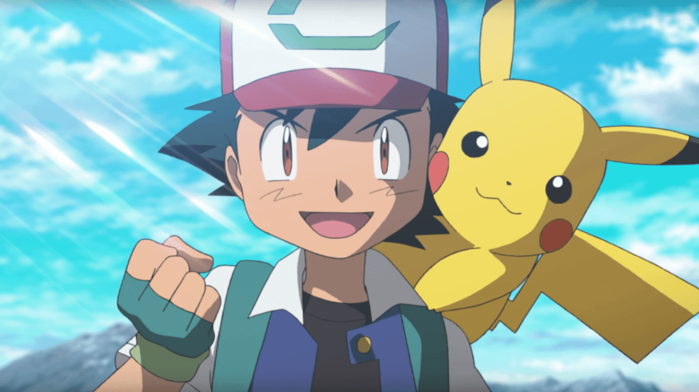

Czym są Pokemony?
Pokemon - to skrót od Pocket Monster. Świat zamieszkany przez słodkie stworki, które towarzyszą ludziom na każdym kroku. Seria znana na całym świecie, akutalnie jedna z największych marek świata.
Początek serii to rok 1996, wtedy została wydana pierwsza gra Pokemon - Pokemon Red and Green na Nintendo GameBoy w Japonii. W oryginale mieliśmy do dyspozycji 151 pokemonów.
Gry szybko doczekały się również wydania na rynku międzynarodowym w wersji Red and Blue.
W podobnym czasie rozpoczęta została emisja serii anime o tym samym tytule, gdzie śledzimy losy Asha oraz jego kompana - Pikachu. Jego przygody widzowie mogli śledzić przez ponad 25 lat.
Świat Pokemon to ponad 120 gier, 25 filmów, serie anime, mang, gra karciana oraz dużo dużo więcej.
Gry Pokemon
Jak wspomniałem wyżej, istnieje ponad 100 gier o pokemonach. Ja skupie się na głównej serii, w której skład wchodzą 22 gry wydane na przestrzeni 25 lat
Większość z nich ma bardzo podobny schemat. Sterujemy postacią, która ma otrzymać swojego pierwszego pokemona (tzw. startera). Naszym zadaniem jest zostanie Czempionem Pokemon w danym regionie.
Aby to osiągnąć musimy zdobyć 8 odznak od trenerów Pokemon, pokonać Elitarną Czwórkę oraz obecnego Czempiona.
Bardzo często będziemy mieli do czynienia również z jakąś złą organizacją oraz Legendarnymi Pokemonami
Oczywiście potrzebujemy do tego silnej drużyny, co uzyskamy łapiąc dzikie pokemony, trenując je w walce i ewoluując je.
Walka w grach Pokemon jest kluczowa. Odbywa się ona turowo. Dodatkowo każdy z ruchów oraz pokemonów ma przydzielony jeden (lub dwa w przypadku pokemona) z osiemnastu dostępnych typów (Np Ogień, Woda)
Niekażdy typ ruchu będzie dobry na każdego Pokemona, więc trzeba o typ pamiętać! (Np ogień będzie słaby przeciwko wodzie, ale dobry przeciwko trawie)
| Generacja | Okładka | Nazwa | Konsola |
|---|